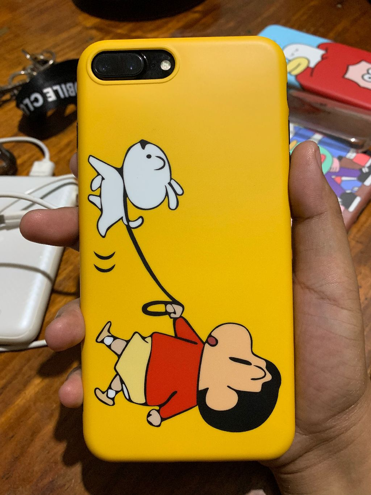

DOG LOVER
It's fun to have a dog around the house. Dogs or puppies are stress stress relievers.
COMPETITIONS
Joining robotics team in EGI is one of the greatest things happened in my college life. Competing with other schools is a remarkable experience for me.I gained friends because of EGI and I learned that I can do the things that I thought I can't. I hope my co-mebers also enjoyed my company.COFFEE LOVER
I usually drink coffee whenever I'm stressed or feeling uneasy. I also have my usual customized Starbucks.
